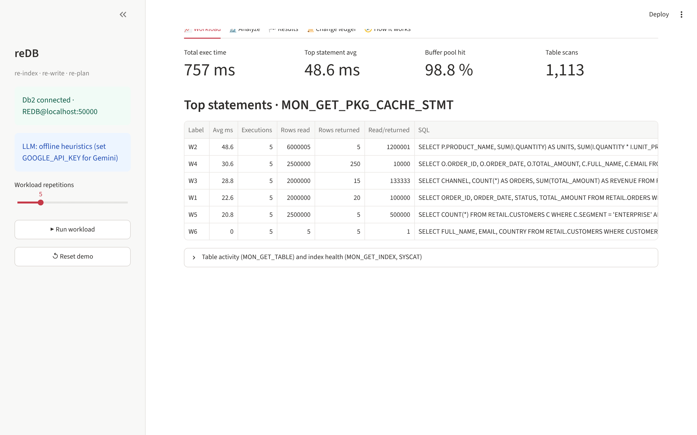
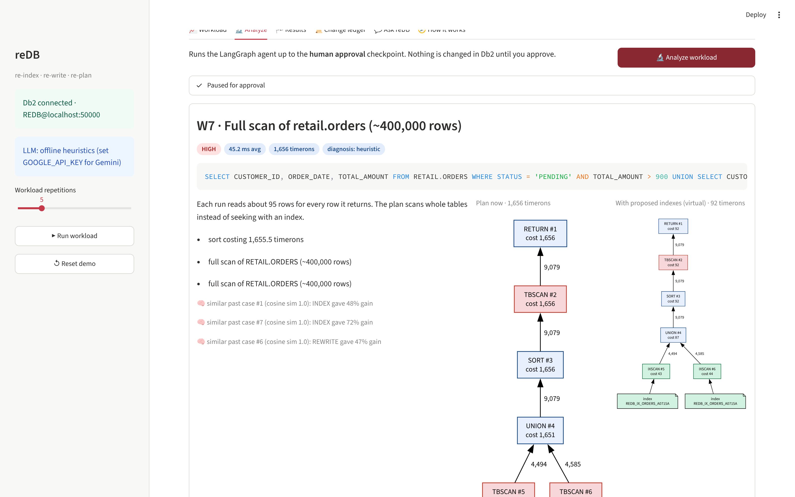
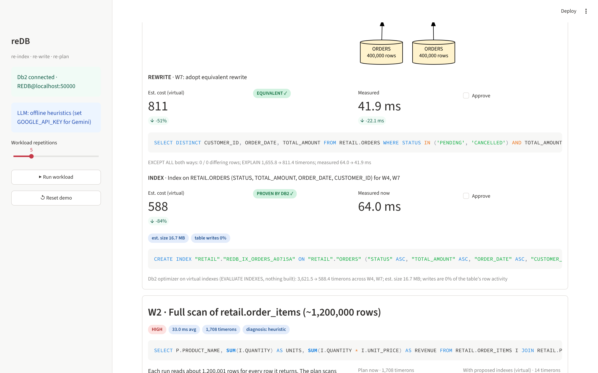
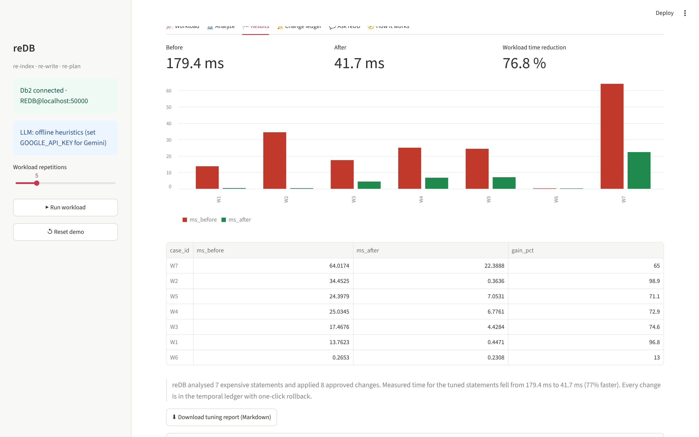
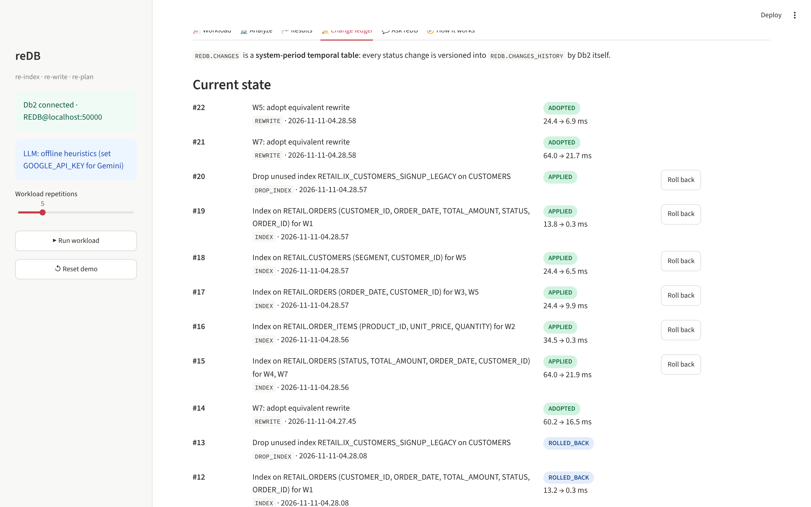
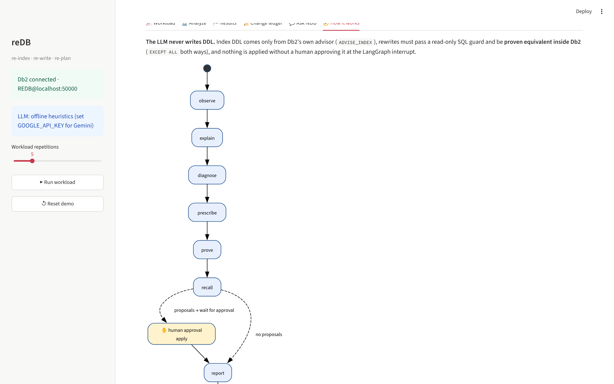

Find slow queries. Prove the fix. Apply it only after you approve.
reDB reads Db2’s own monitoring, explains each slow query with Gemini, and lets Db2 prove every proposal: virtual-index costs for indexes, EXCEPT ALL equivalence for rewrites. Step through the run below.
Step 1Run Workload
Step 2Analyze
Step 3Approve
Step 4Measure
Workload
7 demo statements captured from
MON_GET_PKG_CACHE_STMTNo statements captured yet. Run the workload to give reDB something to tune.
Analyze & Approve
LangGraph pauses before
apply until you approveRun the workload first, then analyze it.
Results
Median of 5 timed runs after 1 warm-up, all rows fetched
Approve proposals and apply them to see measured before & after times.
Change Ledger
System-period temporal table
REDB.CHANGES, every change has undo DDLNo changes yet.
Screenshots From the Real App
Streamlit UI running against Db2 12.1.5





